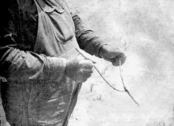
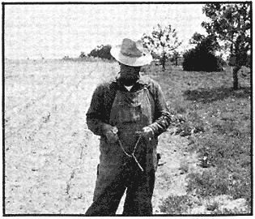
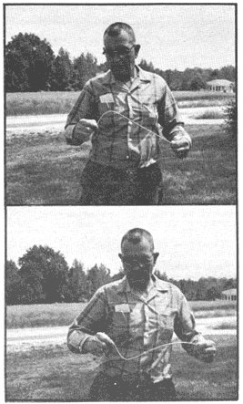

Some say it started with Moses (Numbers 20:9-11). Some swear by the ancient Greeks. But the first written record of finding water with a forked twig is in Georgius Agricola's work, De re metallica, written in 1556.
No matter what the origin, divining or dowsing or witching for water is practiced all over the world and despite scientific ridicule, water witches still flourish today. Almost every area has a diviner or two; Wake County, North Carolina boasts more than a dozen. A few of the Wake County dowsers refer to their skill as witching (from the witch hazel, a popular divining rod of the early American settlers), but it's usually called finding a well, spotting a well, or-simply-finding water.
Until his death a few months ago, Arthur Lee Brown was the best known dowser in Northern Wake County. He'd been witching for twenty-five years and found more than a hundred good wells. Arthur Lee claimed it came in spurts: You found a well for one person, and two or three other prospects cropped up.
Brown started divining by accident. A man came through who could witch, and Arthur Lee found out that he could, too. "Not everybody can do it, you know," he declared with conviction. "It just works for some folks." A freshly cut peach tree twig or a length of grapevine were Brown's favorite tools. He held them both palms down, with his thumbs turned in. The grape vine spun in his hands as he walked over the vein, and the forked stick pointed toward the ground.
Like most diviners, Brown wouldn't even guess why the switch worked. He just knew that it did. "There's a streak of water down under the ground," he explained, "and if you take even one step off to the side, the stick won't move. You have to be right on top of the water."
He told about a man who claimed he could figure the depth of the water, but Arthur Lee wasn't so sure. He could find water, but wouldn't go any further than that.
William C. Barham can't tell the depth of the water either, but he will tell you which direction it flows. He can tell by the way the twig turns. He likes to witch with a "water sprout" (a new sprout that comes up under a peach tree), but a regular branch will do, so long as it's fresh and has a good fork. A good stick will last him for two or three days, or until it starts to dry out.
"I don't know what makes it work," he says, "but if you can find somebody who does, I wish you'd tell me. All I know is that I can't hold that sprout still when it gets over the water."
He started finding wells about twelve or fourteen years ago, after he got a man in to dowse one for him. Like Brown, he tried it and found he had the gift. But he's convinced that if he accepts payment for finding, a well, the gift will disappear. Same way with wishing off warts, which he can do, too. You have to do it for free.
"I reckon I've found more than a hundred wells around here, and I've never missed once," Barham says. "There's some land that don't have water though. Three of us walked the whole yard of our church, about an acre, and nobody's stick even quivered. Finally had to pull in water from way off the land. I got a good stream of water here in my yard. One stream comes in from the West and crosses another one out of the South, right about there in front of that truck. If I had a peach stick I could show you, but I can't do it with nothing else."
A lot of people think that water divining is confined to rural areas, but that isn't true. Mrs. J. P. Pendergrass, of Raleigh, N.C., does her witching in suburban Laurel Hills. She found her own well and says, "It's the best one in the development. I witched two others out here, and one of them is real good. The well driller wouldn't go where I told him to on the other one though, and they haven't got enough water."
She used to travel all over the state finding wells but hasn't done any witching in a couple of years. Her husband vetoed her trips after Mrs. Pendergrass went on a job where the land wasn't cleared and walked around in brambles as high as her head. When she did go out of town, though, Mrs. Pendergrass would accept travel expenses . . . but no pay for finding the well.
"Mostly, I get a big kick out of being able to do it," she says. "Since I have the gift, or I suppose you call it a gift, I feel like I might as well use it." One way it's come in handy for her is locating water lines for people who want to tap into them and don't know where they are.
Mr. A. B. Lowery is eighty-two, and has just about retired from the well finding field. He says, "I can't hardly do it anymore; the strength is gone from my hands." But he's found a lot of wells in his day.
Mr. Lowery learned from his father, and he doesn't consider it any particular gift. He contends that anybody can do it, but his son disagrees. "Pa'll tell you anybody can do it," he says, "but I can stand right over the well and the switch won't turn for me."
According to Lowery, you have to stand facing north, because water always flows north to south and you have to walls with the flow. He figures there's water everywhere, but the switch turns hardest where there's the most water and w here it's nearest the top of the ground.
Lowery's not too particular about the kind of stick he uses just so it's a straight, new sprout. He's witched with peach, and even dogwood. He holds the sprig palm up, under his finger tips, and bends it into an arch. When the branch get, over a good water source, it'll wring the bark off in his hands.
J. D. Goldston is another one who believes anybody can use the switch if they want to. He's a well driller, and he's not sure whether it's all a coincidence or not, but he's had good luck, and figures it doesn't hurt anything. He's drilled behind a lot of dry wells and found water where his stick turned.
On one eighteen acre plot near Durham, N.C., where water is hard to find, Goldston was called in after another driller had given up on the job. J. D. walked the entire eighteen acres and found only one vein of water across the whole tract. He drilled just fifty feet from where the other driller had sunk dry well-and hit water at seventy feet.
Goldston says he'd always heard of finding wells with V limb, but never paid any attention to the stories until he got ready to build his own house. That was before he was in the well drilling business, and his wife's Grandaddy insisted witching their well. They drilled where he said, and hit water at ninety-six feet, even though the land is on top of a hill. People just down the slope failed to get water at two hundred and fifty feet. That was when Goldston decided there must be something to the whole thing.
J. D. says he can't remember ever drilling with the switch and not getting water, and he likes to use it whenever he can.
Of course, on lots with septic tanks and drain fields, he has to compromise sometimes and place the well for convenience.
He likes a wild cherry switch because it's easy to find and doesn't have knots like a peach limb. He holds it palms down, and it turns completely around in his hands. It points down over the water, and comes back up when he passes the vein.
Mr. Goldston figures he's in a definite minority among well drillers; that at least 80% think the whole thing is a lot of baloney. But he can still locate water where some of them fail.
You find a lot of believers and a lot of non-believers and quite a few people still on the fence where the subject of dowsing is concerned. Mrs. D. P. Jenks, of the Falls of Neuse community says, "I don't even try to understand why it works, but I believe in it just the same. It seems to me the Lord must have given somebody on earth the ability to do everything that needs to be done." A gentleman at the North Carolina Department of Water Resources had an entirely different view. He said, "It's just a lot of hogwash." Mr. Obie O'Neal, of Wake Forest, N.C., doesn't know what to think. He says it worked for him once, but it never would again.
Fact or folklore? Who knows? But a lot of people have good wells that were found with the switch, and a lot of people have felt that twig turn in their hand. I have, and there's no need to argue with me.
|
 PHOTOS BY DURWARD MATHENY JEAN McCAMY |
 The forked stick dips toward water for William C. Barham. |
 The grapevine spins as Arthur Lee Brown finds water. |